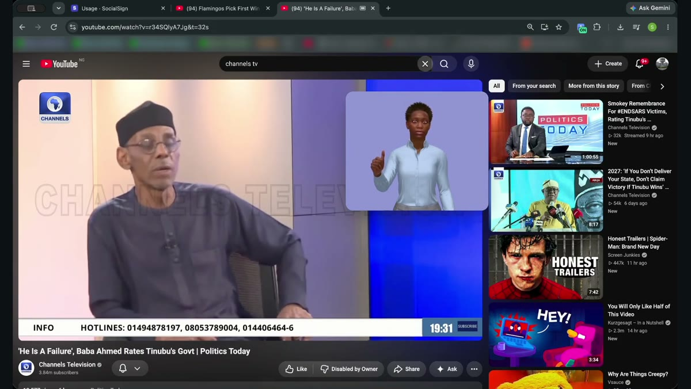
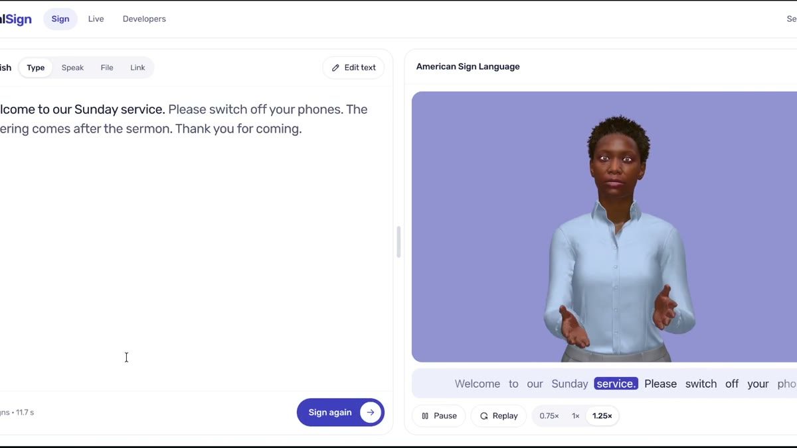

A lifelike digital signer for every screen
The content is already there. Make it accessible in sign language.
Meet Ada, our lifelike digital signer. She signs online videos, live broadcasts, websites and apps, right where people already are.
Works where people already watch
No new app to learn. Ada joins the platforms they use every day.
YouTubeBrowser extension
TikTokSupported videos
OBS live streamsOne link
Your website or appAPI and dashboard
Products
One signer, everywhere your audience is
Instead of asking people to change where they watch, learn, or follow the news, we bring sign language directly into those experiences.

Also on supported TikTok videos.Get the extension
Open one link on the streaming computer. Nothing to install.Set up a live stream

Each word lights up as Ada signs it.See the developer tools
See it working
Ada on YouTube, TikTok, OBS and the dashboard, in 47 seconds
Captions show every word spoken.
Why SocialSign
Sign language that comes to the content
Deaf people shouldn't have to leave what they're watching to understand it.
CaptionsProvide text, and text is not sign language.
Recorded signingNeeds every piece of content prepared in advance.
Standalone appsTake people away from what they want to watch.
SocialSignBrings sign language into the experiences people already use.
Progress
Moving from prototype to pilots
5,000+signs in Ada's library, up from 1,439
60+people have tested the product
5potential pilot partners across media, churches and digital platforms
~7Mestimated Deaf Nigerians
Finalist, Wema Bank Hackaholics 7.0, Social Impact track
Registered: SocialSign Technologies Limited, RC 9949348
~7M: estimate by H. Taiwo, president of the Nigerian National Association of the Deaf (Leadership, Sep 2026).
Our vision is a world where Deaf people feel included, informed, and free to participate.
We're looking for pilot partners, Deaf testers and supporters. Tell us what you'd like Ada to sign.
samuelshonubi860@gmail.com